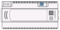
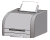

Creating the System Topology
Under system topology, states for servers, drivers, databases, printers, and automation stations are displayed optically on the graphics page.
- Click New Graphics
 .
. - Draw the network structure using Lines
 .
. - Click Save
 .
. - Applications > Graphics is selected.
- Select Applications > Graphics > [selected graphics hierarchy].
- In the Name text field, enter a unique name for the graphics page.
- Click Save.
- Create the following graphic objects Automation station, Printer, Network, Project Backup and HDB backup, as per the instructions in the sections below.

NOTE:
A Viewport of the graphics page must be created once all objects are created on it.
Automation Stations
- From the Options tab, in the Symbol options group, from the drop-down list select 2D+.
- In System Browser, select Management View.
- Select Project > Field Networks > [Network name] > [Automation station].
- Drag the object to the graphics page.
- The automation station is now placed

. - Select Text
 and enter the Description (for example, AS01 North).
and enter the Description (for example, AS01 North). - Repeat Steps 3 to 5 for each available automation station.
Printer
- A printer is created and visible in System Browser.
- In System Browser, select Management View.
- Select Project > Management Station > Servers > Main Server > [printer name].
- Drag the object to the graphics page.
- The printer symbol is now placed

. - (Optional) Select Text and enter a Description (for example, Trend printer 1).
- The printer is created and displays all information supported in Online mode, including offline, paper jam, etc.
Network
- In System Browser, select Management View.
- Select Project > Field Networks > [Network name].
- Drag the object to the graphics page.
- A generic network symbol is placed .
- Select Text and enter the Description (for example, Desigo BACnet network).
- Repeat Steps 2 to 4 for each available network.
Driver
- From the View tab, in the Display Views group, select Library Browser.
- Enter the following library filter: *Object_None*.
- The generic graphics symbol for text display is displayed as a search result.
- Drag-and-drop the object Global_Base_HQ_1\DYN_All_Generic_Display_Object_None_Central_001 to the graphics page .
- In System Browser, select Management View.
- Select Management > Management Station > Server > Main Server > Drivers > [driver name].
- Drag-and-drop the object reference to the generic Graphics symbol.
- The driver reference is added to the Object Reference text field.
- Select Text and enter the Description (for example, Desigo BACnet network driver).
- Repeat Steps 2 to 4 for each available driver.
Project Backup
- From the View tab, in the Display Views group, select Library Browser.
- Enter the following library filter *BackupState*.
- The graphics symbol backup status is displayed as a search result.
- Drag-and-drop the object Global_Base_HQ_1\DYN_All_Generic_Display_Object_BackupState_Central_001 to the graphics page .
- In System Browser, select Management View.
- Select Project > Management Station > Server > Main Server.
- Select the Extended Operation tab and then the Backup Status property.
- In Properties > Symbols Instance, drag-and-drop the object reference to the Object Reference dialog box.
- The project backup reference is added to the text field object reference.
- Select Text and enter the Description (for example, Project backup).
- Repeat Steps 3 through 8 for additional information (for example, Last successful backup date).
HDB Backup
- In System Browser, select Management View.
- Select Project > Servers > Main Server > History Database > Archive Groups > Backup.
- Drag the object to the graphics page.
- A generic database symbol is placed .
- Select Text and enter the Description (for example, Backup, HDB database).
Creating a Viewport
- The System Topology page is completed and open.
- In the Viewports group, click Create Viewports
 .
. - Click Manual Viewport
 .
. - Create a viewport that is the same size as the graphics page.
- Click Save
 .
. - The viewport is saved below the corresponding graphics page and is displayed in System Browser.
- In System Browser, select Viewport.
- The Viewport properties dialog box opens.
- In System Browser, select Management View.
- Select Project > Field Networks > Own Views and in Properties > Advanced, drag-and-drop the applicable folder to the Link References text field.
- Close the Viewport Properties dialog box.
- The folders Field network and Management system are linked to the viewport. The graphics page System Topology opens if the user selects one of these nodes.
NOTE:
When changing the graphics page System Topology, the viewport System Topology must be re-saved.